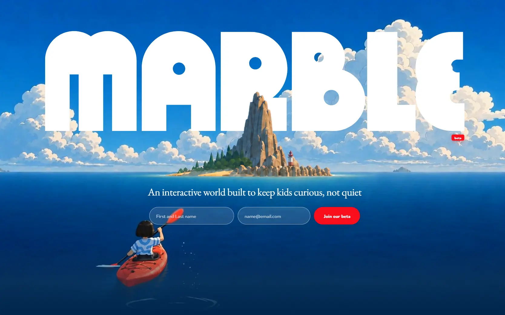

Marble
- Образование
- Игры и развлечения
- Курсы
- Игра
- Игривый
- Иммерсивный 3D
- Сайт жив

Что это
Сайт интерактивной обучающей вселенной для детей 6–12 лет от компании Generative Spark. Главная собрана вручную на SVG-масках и CSS-анимациях, а на том же домене живут три отдельных приложения — лаборатория воды, симулятор экосистемы и Unity-сборка. Увлекательный сайт интерактивной обучающей вселенной для детей 6–12 лет.
Чем интересен
- На одном домене живут четыре разных стека: рукописный статический сайт, лаборатория воды на Next.js с three.js, симулятор экосистемы на Next.js и сборка Unity WebGL с файлами на 49 и 66,5 мегабайта.
- Продукт переименован из Pebble: старый домен перенаправляет на новый, в исходниках сайта остался комментарий о переносе, а в живой сборке Unity до сих пор указано прежнее имя компании.
- Аналитика сознательно вырезана из всего, что видит ребёнок: в коде прямо написано, что счётчики допустимы только на главной для родителей и никогда на страницах детского опыта; пиксель Meta стоит только на главной, а на страницах учебного плана и трёх приложений счётчиков нет вовсе.
- У главной нет ни одного заголовка первого уровня, а в блоке принципов иерархия прыгает со второго уровня сразу на четвёртый — при том что на остальных проверенных страницах заголовок первого уровня ровно один.
- Открытый учебный план: страница курса отдаёт 1590 концептов и 3221 связь одним встроенным JSON и рисует их самописным рендерером с собственной проекцией из трёх измерений в два, а сам граф опубликован в открытом репозитории.
- Скриншот зафиксировал более раннюю версию: тэглайн и красный бейдж беты совпадают, но формы ожидания с именем и почтой в разметке больше нет — её заменили кнопки магазина приложений, хотя классы формы в стилях остались.
Паспорт
- Домен
- withmarble.com
- Тип сайта
- Многостраничный
- Категории
- Образование, Игры и развлечения
- Подкатегории
- Курсы, Игра
- Для кого
- Преподавателям, Студентам, Обычным пользователям
- Стиль
- Игривый, Иммерсивный 3D
- Язык
- Английский
- Страна
- США
- Автор
- Generative Spark, Inc.
- Год
- 2026
- Добавлен в коллекцию
- 08.10.2026
Палитра
-
#033160— 30% кадра -
#FFFFFF— 21% кадра -
#025FB2— 20% кадра -
#89B5D4— 10% кадра -
#1F87CE— 4% кадра
- Режим
- Тёмная
- Цвет фона
- Синий
Технические факты
- HTTPS
- да
- Meta viewport
- да
- Title
- Marble: the interactive learning world for curious kids, ages 6-12 (66 симв.)
- Description
- Marble is an interactive learning world for curious kids aged 6-12: 100 kids' apps in one game, from drawing and homework help to languages, storytelling and quizzes. Built to grow curiosity, confidence and creativity, not passive screen time. Join the beta. (258 симв.)
- Open Graph
- да
- Структурированные данные
- да
- Sitemap
- есть: шесть адресов с частотой и приоритетами; страницы учебного плана и лаборатории воды в карту не попали
- Robots
- две строки: разрешение всем и указание карты сайта, ничего не закрыто
- Аналитика
- Google Analytics 4 (G-028J9XTRD0), PostHog, Customer.io, Meta Pixel (только на главной)
- Проверено ссылок
- 25
- Битые ссылки
- нет
- Контакты
- только почта: support@, privacy@, jobs@ и safety@ на своём домене; телефона, адреса и профилей в соцсетях нет нигде на сайте
- Юридическая информация
- Generative Spark, Inc. с регистрацией в Делавэре как контролёр данных; право Делавэра и обязательный арбитраж с отказом от коллективных исков; явно названы COPPA, GDPR и UK GDPR, согласие родителей по схеме «почта плюс», аккаунт ребёнка создаёт только родитель, данные детей не продаются и не используются для рекламы, обучение ИИ на данных ребёнка — только с явного согласия; у каждой секции условий есть пересказ «для детей»
Технологии с доказательствами
- Рукописная статика без фреймворка — главная — один документ на 380 килобайт со встроенными стилями и скриптами, единственный внешний файл это app-store.js; следов Next, Nuxt, Astro, Svelte, webpack и Vite нет
- Netlify — заголовки ответа сервера, состояние кэша и идентификатор запроса
- Next.js с React и Turbopack в подприложении — раздел лаборатории воды грузит чанки служебного каталога сборки, включая чанк Turbopack, и клиентский корень React
- three.js r184 — в чанке размером 388 килобайт таблица ревизии со значением 184 и классы рендерера, буферной геометрии и материалов
- Unity WebGL — страница солнечной системы содержит канвас с идентификатором unity-canvas, вызов создания инстанса и конфигурацию сборки; файлы сборки весят 49 и 66,5 мегабайта, а в конфигурации до сих пор указано прежнее имя компании
- Самописный canvas-рендерер графа — на странице учебного плана собственный двумерный контекст с ограничением плотности пикселей, а данные приходят встроенным JSON на 528 тысяч символов: 1590 узлов и 3221 связь с предвычисленными координатами
- Шрифты — подключение EB Garamond и Inter через сервис Google плюс собственный шрифт Merel тремя файлами, с комментарием что запасной Inter используется до предоставления файла
- SVG-маска как основной приём вёрстки — словесный знак, логотип в липкой панели и логотип в подвале — это сплошные слои, обрезанные одной и той же SVG-маской, благодаря чему остров рисуется поверх букв
- Видео на своём хостинге — три тега видео с автозапуском, зацикливанием и отключённым звуком: ролик с каяком на 6,3 мегабайта и два клипа про рисование и поделки, плюс размытый постер-заглушка
- Библиотек анимации нет — ни GSAP, ни Lenis, ни Lottie, ни Rive, ни Swiper, ни Barba — всё движение сделано CSS-анимациями, наблюдателями, медиазапросами и кадрами анимации
- Аналитика — GA4, PostHog, Customer.io и пиксель Meta только на страницах для родителей; в комментарии исходника прямо сказано, что на страницах детского опыта счётчиков быть не должно
Что смотреть в первую очередь
Смотреть ради того, как одна компания держит на одном домене четыре разных технологии: рукописную статику, Next.js с three.js, симулятор на серверных компонентах и сборку Unity WebGL на 116 мегабайт — и при этом сознательно отключает всю аналитику на страницах, которыми пользуется ребёнок.
Похожие в коллекции
- basement.studio — общее: Игры и развлечения, Иммерсивный 3D, Графика WebGL и 3D, Встроенная игра
- Utopia Tokyo — общее: Иммерсивный 3D, Графика WebGL и 3D
- Grundini — общее: Игривый, Визуализация данных
- Aevion — общее: Иммерсивный 3D, Графика WebGL и 3D